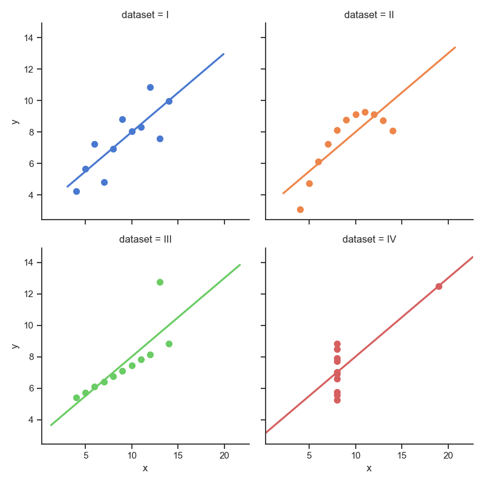

Numpy
Table of Contents
1. 簡介
NumPy 是 Python 語言的一個擴充程式庫。支援高階大量的維度陣列與矩陣運算，此外也針對陣列運算提供大量的數學函式函式庫。NumPy 的前身 Numeric 最早是由 Jim Hugunin 與其它協作者共同開發，2005 年，Travis Oliphant 在 Numeric 中結合了另一個同性質的程式庫 Numarray 的特色，並加入了其它擴充功能而開發了 NumPy。NumPy 為開放原始碼並且由許多協作者共同維護開發。1
2. NumPy 陣列
2.1. create
Numpy 的重點在於陣列的操作，其所有功能特色都建築在同質且多重維度的 ndarray（N-dimensional array）上。ndarray 的關鍵屬性是維度（ndim）、形狀（shape）和數值類型（dtype）。 一般我們稱一維陣列為 vector 而二維陣列為 matrix。一開始我們會引入 numpy 模組，透過傳入 list 到 numpy.array() 創建陣列。
- with data
1: # 引入 numpy 模組 2: import numpy as np 3: np1 = np.array([1, 2, 3]) 4: np2 = np.array([3, 4, 5]) 5: 6: # 陣列相加 7: print(np1 + np2) # [4 6 8] 8: 9: # 顯示相關資訊 10: print(np1.ndim, np1.shape, np1.dtype) # 1 (3,) int64 => 一維陣列, 三個元素, 資料型別 11: 12: # create identity matrix 13: ary1 = np.eye(3) 14: print(ary1) 15: 16: # create diagonal array 17: ary2 = np.diag((2,1,4,6)) 18: print(ary2) 19: 20: # 21: ary3 = np.array([range(i, i+3) for i in [2,4,6]]) 22: print(ary3) 23: 24: # tile 25: ary4 = np.array([0,1,2]) 26: print(np.tile(ary4,2)) 27: print(np.tile(ary4,(2,2))) 28: 29: ary5 = np.array([[1,2],[6,7]]) 30: print(np.tile(ary5,3)) 31: print(np.tile(ary5,(2,2)))
[4 6 8] 1 (3,) int64 [[1. 0. 0.] [0. 1. 0.] [0. 0. 1.]] [[2 0 0 0] [0 1 0 0] [0 0 4 0] [0 0 0 6]] [[2 3 4] [4 5 6] [6 7 8]] [0 1 2 0 1 2] [[0 1 2 0 1 2] [0 1 2 0 1 2]] [[1 2 1 2 1 2] [6 7 6 7 6 7]] [[1 2 1 2] [6 7 6 7] [1 2 1 2] [6 7 6 7]]
- numpy.random.randint()
語法：numpy.random.randint(low, high=None, size=None, dtype=’l’)
函式的作用是，返回一個隨機整型數，範圍從低（包括）到高（不包括），即[low, high)。
如果沒有寫引數 high 的值，則返回[0,low)的值。
1: import numpy as np 2: np.random.seed(0) 3: 4: x1 = np.random.randint(10, size=6) 5: x2 = np.random.randint(10, size=(3,4)) 6: x3 = np.random.randint(10, size=(3,4,5)) 7: print(x1) 8: print(x2) 9: print(x3)
[5 0 3 3 7 9] [[3 5 2 4] [7 6 8 8] [1 6 7 7]] [[[8 1 5 9 8] [9 4 3 0 3] [5 0 2 3 8] [1 3 3 3 7]] [[0 1 9 9 0] [4 7 3 2 7] [2 0 0 4 5] [5 6 8 4 1]] [[4 9 8 1 1] [7 9 9 3 6] [7 2 0 3 5] [9 4 4 6 4]]]
- numpy.random.rand()
根據給定維度生成(0,1)間的資料，包含 0，不包含 1
1: import numpy as np 2: 3: np.random.seed(9627) #設置相同變數，每次生成相同亂數 4: ar = np.random.rand(2,4) 5: print(ar)
[[0.28012059 0.19216219 0.63985614 0.48842053] [0.9441813 0.88992099 0.17534833 0.29543319]]
2.2. numpy 矩陣間的運算
- element-wise
1: import numpy as np 2: 3: ar = np.array([[1,2,3],[4,5,6],[2,3,4]]) 4: print(ar) 5: print(ar+ar) 6: print(ar**.5) 7: 8: ar1 = np.array([[2,2],[3,3],[1,1]]) 9: print(ar.dot(ar1)) #矩陣dot
[[1 2 3] [4 5 6] [2 3 4]] [[ 2 4 6] [ 8 10 12] [ 4 6 8]] [[1. 1.41421356 1.73205081] [2. 2.23606798 2.44948974] [1.41421356 1.73205081 2. ]] [[11 11] [29 29] [17 17]]
- Expressing Conditional Logic as Array Operations
1: import numpy as np 2: 3: xr = np.array([1.1, 1.2, 1.3, 1.4, 1.5]) 4: yr = np.array([2.1, 2.2, 2.3, 2.4, 2.5]) 5: cond = np.array([True, False, True, True, False]) 6: 7: result = [(x if c else y) 8: for x, y, c in zip(xr, yr, cond)] 9: print(result) 10: print(type(result)) 11: print(np.where(cond, xr, yr)) 12: print(type(result)) 13: #結果都傳回list,為何有,的差異
[1.1, 2.2, 1.3, 1.4, 2.5] <class 'list'> [1.1 2.2 1.3 1.4 2.5] <class 'list'>
- Braodcasting
1: import numpy as np 2: 3: x1 = np.arange(9.0).reshape((3,3)) 4: print(x1) 5: x2 = np.arange(1, 4) 6: print(x2) 7: print(np.multiply(x1,x2))
[[0. 1. 2.] [3. 4. 5.] [6. 7. 8.]] [1 2 3] [[ 0. 2. 6.] [ 3. 8. 15.] [ 6. 14. 24.]]
- Array sorting
1: import numpy as np 2: 3: ar = np.array([[3,2,5],[10,-1,9],[4,1,12]]) 4: print("origin:\n",ar) 5: ar.sort(axis=0) 6: print("axis=0:\n",ar) 7: ar.sort(axis=1) 8: print("axis=1:\n",ar)
origin: [[ 3 2 5] [10 -1 9] [ 4 1 12]] axis=0: [[ 3 -1 5] [ 4 1 9] [10 2 12]] axis=1: [[-1 3 5] [ 1 4 9] [ 2 10 12]]
- Array reverse
1: import numpy as np 2: 3: ar = np.arange(5) 4: print(ar[::-1])
[4 3 2 1 0]
2.3. 矩陣間的 convolute 運算
- numpy.convolve(a, v, mode=’full’)，這是 numpy 函數中的卷積函數庫
參數：
- a:(N,)輸入的一維數組
- b:(M,)輸入的第二個一維數組
- mode:{’full’, ’valid’, ’same’}參數可選
- full 預設值，返回每一個卷積值，長度是 N+M-1,在卷積的邊緣處，信號不重疊，存在邊際效應。
- full 預設值，返回每一個卷積值，長度是 N+M-1,在卷積的邊緣處，信號不重疊，存在邊際效應。
- same 返回的數組長度為 max(M, N),邊際效應依舊存在。
- valid 返回的數組長度為 max(M,N)-min(M,N)+1,此時返回的是完全重疊的點。邊緣的點無效。
1: # -*- coding: utf-8 -*- 2: # 解決圖形中文問題 3: from pylab import * 4: mpl.rcParams['font.sans-serif'] = ['SimHei'] 5: plt.rcParams['axes.unicode_minus']=False 6: 7: import numpy as np 8: import matplotlib.pylab as plt 9: 10: a = np.array([1, 2, 3]) 11: b = np.array([0.1, 1, 0.5]) 12: y = np.arange(0, 3) 13: print("a: ",a) 14: print("b: ",b) 15: 16: # 1. 17: print(a*b[0]) 18: print(a*b[1]) 19: print(a*b[2]) 20: plt.clf() 21: plt.xlim((-1, 5)) 22: plt.ylim((0, 5)) 23: plt.bar(y, a*b[0], .5, color='blue') 24: plt.xlabel('a[n]乘以b[0]後平移至位置0'); 25: plt.savefig("anb0.png") 26: # 2. 27: plt.clf() 28: plt.xlim((-1, 5)) 29: plt.ylim((0, 5)) 30: plt.bar(y+1, a*b[1], .5, color='green') 31: plt.xlabel('a[n]乘以b[1]後平移至位置1'); 32: plt.savefig("anb1.png") 33: # 3. 34: plt.clf() 35: plt.xlim((-1, 5)) 36: plt.ylim((0, 5)) 37: plt.bar(y+2, a*b[2], .5, color='orange') 38: plt.xlabel('a[n]乘以b[2]後平移至位置2'); 39: plt.savefig("anb2.png") 40: # Stack 41: anb0 = [0.1, 0.2, 0.3, 0, 0] 42: anb1 = [ 0, 1, 2, 3, 0] 43: anb2 = [ 0, 0, 0.5, 1, 1.5] 44: plt.clf() 45: plt.xlim((-1, 5)) 46: plt.ylim((0, 5)) 47: plt.bar(np.arange(0,5), anb0, .5, color='blue') 48: plt.bar(np.arange(0,5), anb1, .5, color='green', bottom=anb0) 49: plt.bar(np.arange(0,5), anb2, .5, color='orange', bottom=np.add(anb0,anb1)) 50: plt.xlabel('將三圖疊加起來'); 51: 52: plt.savefig("abStack.png") 53: print("Full:",np.convolve(a, b)) 54: print("same:",np.convolve(a, b, 'same')) 55: print("valid:",np.convolve(a, b, 'valid')) 56:
a: [1 2 3] b: [0.1 1. 0.5] [0.1 0.2 0.3] [1. 2. 3.] [0.5 1. 1.5] Full: [0.1 1.2 2.8 4. 1.5] same: [1.2 2.8 4. ] valid: [2.8]
以矩陣 a = np.array([1, 2, 3]), b = np.array([0.1, 1, 0.5])為例，numpy.convolve 的計算過程如下：
- 求出 a*b[0]，平移至位置 0，如圖[[fig:convolve-1]

Figure 1: convolve 的計算過程-1
- 求出 a*b[1]，平移至位置 1，如圖2

Figure 2: convolve 的計算過程-2
- 求出 a*b[2]，平移至位置 2，如圖3

Figure 3: convolve 的計算過程-1

Figure 4: convolve 的計算過程-1
3. Numpy 檔案輸出輸入
3.1. Binary Format 2
- save() / load()
1: import numpy as np 2: import subprocess 3: 4: x = np.arange(20) 5: print("原始內容:", x) 6: np.save("test_array.npy", x) #.npy 7: y = np.load("test_array.npy") 8: print("讀回來:", y)
原始內容: [ 0 1 2 3 4 5 6 7 8 9 10 11 12 13 14 15 16 17 18 19] 讀回來: [ 0 1 2 3 4 5 6 7 8 9 10 11 12 13 14 15 16 17 18 19]
- savez(): 儲存多個陣列在一個 zip 的檔案中
1: import numpy as np 2: aData = [1,2,3,4,5,6] 3: bData = [7,8,9,10,11,12] 4: np.savez('my_archive.npz', a=aData, b=bData) 5: myArch = np.load('my_archive.npz') 6: print(myArch['a'])
[1 2 3 4 5 6]
3.2. Text Files
- savetxt
1: import numpy as np 2: 3: ac = np.array([np.arange(1,6),np.arange(10,15)]) 4: np.savetxt('txtfile.txt', ac) 5: 6: myArr = np.loadtxt('txtfile.txt', delimiter=' ') 7: print(myArr)
[[ 1. 2. 3. 4. 5.] [10. 11. 12. 13. 14.]]
- savez(): 儲存多個陣列在一個 zip 的檔案中
1: import numpy as np 2: aData = [1,2,3,4,5,6] 3: bData = [7,8,9,10,11,12] 4: np.savez('my_archive.npz', a=aData, b=bData) 5: myArch = np.load('my_archive.npz') 6: print(myArch['a'])
[1 2 3 4 5 6]
4. Data Visualization
4.1. pylab
1: import numpy as np 2: import pylab as pl 3: 4: x = np.arange(0.0, 2.0*np.pi, 0.01) 5: print("x:", x[:5]) 6: y = np.sin(x) 7: print("y:", y[:5]) 8: 9: pl.plot(x,y) 10: pl.xlabel('x') 11: pl.ylabel('y') 12: pl.title('sin') 13: pl.savefig("sinPlot.png")
x: [0. 0.01 0.02 0.03 0.04] y: [0. 0.00999983 0.01999867 0.0299955 0.03998933]

Figure 5: sinPlot
4.2. Bokeh
1: import numpy as np 2: from bokeh.plotting import figure, show 3: from bokeh.io import output_notebook, export_png, output_file, save 4: import matplotlib.pylab as plt 5: 6: N = 4000 7: 8: x = np.random.random(size=N)*100 9: y = np.random.random(size=N)*100 10: radii = np.random.random(size=N)*1.5 11: colors = ["#%02x%02x%02x" % (r, g, 150) for r, g in zip(np.floor(50+2*x).astype(int), np.floor(30+2*y).astype(int))] 12: 13: output_notebook() 14: p = figure(title="Basic Title", plot_width=300, plot_height=300) 15: p.circle(x, y, radius=radii, fill_color=colors, fill_alpha=0.6, line_color=None) 16: output_file('bokehPlot.html', mode='inline') 17: save(p)
4.3. seaborn
1: import seaborn as sns 2: sns.set(style="ticks") 3: 4: #Load the example dataset for Anscombe's quartet 5: df = sns.load_dataset("anscombe") 6: 7: # Show the results of a linear regression within each dataset 8: sns.lmplot(x="x", y="y", col="dataset", hue="dataset", data=df, col_wrap=2, ci=None, palette="muted", height=4, scatter_kws={'s' :50,'alpha':1}) 9: 10: import matplotlib.pyplot as plt 11: #sns.sns_plot.savefig("seabornPlot.png") 12: plt.savefig("seabornPlot.png")

Figure 6: seabornPlot
4.4. Altair
1: import altair as alt 2: from vega_datasets import data 3: 4: cars = data.cars() 5: 6: chart = alt.Chart(cars).mark_point().encode( x='Horsepower', y='Miles_per_Gallon', color='Origin').interactive() 7: 8: #import pylab as pl 9: #pl.savefig("altairPlot.png") 10: chart.save('altairPlot.png', webdriver='firefox') 11: chart.savechart('altairPlot.html')

Figure 7: altairPlot